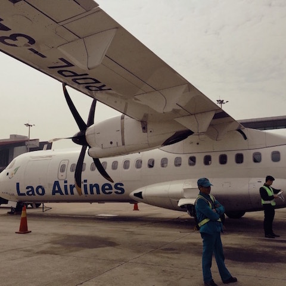
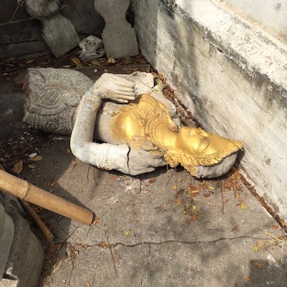
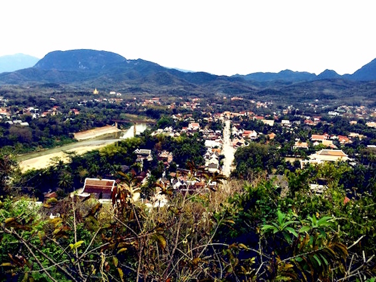

ラオス旅行1日目
アジア最後の桃源郷ラオス ルアンパバーンへ１日目

ハノイのノイバイ空港から、プロペラ機に乗る。
ちゃんと飛ぶのか心配だったが、快適な空の旅でルアンパバーン国際空港へ到着した。
日本人バックパッカーの青年（19歳）と出会い、タクシー相乗りして中心部へ移動
自撮り棒を青年から借りて撮影。左から、Y先輩・自分・青年

青年とY先輩と街を散策。
綺麗な街並みで心を奪われる。

街中には寺院がいたるところに点在している。
一番最初に見つけた寺院を、写真撮影する。
最初の寺院しか寺院の写真をほとんど撮っていない。

仏像が無残な姿に。

俺を撮れとY先輩。
バックパッカーの青年と別れ、メコン川横のカフェでビールを飲む。
天気も良くビールが美味しい。
さすが、東南アジア１のビールと言われるビアラオだ。
Y先輩はコーラだ。
街を歩くと興味をひくポスターを発見した。
頷くY先輩。
街中で、とてもまずそうな酒を見つけた。
Y先輩に飲めと勧められる。
逆らうことなどできず飲んだが、美味しいわけがない。
泥の味がした。

夕方近くなり町一番の絶景ポイントである、プーシーの丘へ向かう。
ルアンパバーンの街並み、2つの川を一望できる絶景ポイントである。
絶景ポイントからたくさんの外国人たちが記念撮影をしている。
俺を撮れと、Y先輩。

プーシーの丘から絶景を眺め下山する。
ルアンパバーンの夜の楽しみであるナイトマーケットの準備が始まっていた。
夕暮れ時のテントが並ぶ光景に心を奪われる。
ナイトマーケットまで夕食にレストランへ。
ラオス料理を食べたが正直、美味しかったがよくわからなかった。
それよりもラオス猫が周りをウロついていた。
猫嫌いの自分もエサをあげた。かわいい。
ナイトマーケットは安いし、品揃えも豊富であった。
ハノイで行ったナイトマーケットより格段に良かった。
Tシャツや雑貨などが綺麗に並べられていた。
ラオスのトイレの標識は興味深い。
ナイトマーケットからのホテルへ、明日朝の托鉢に備える。
２日目へ続く・・・